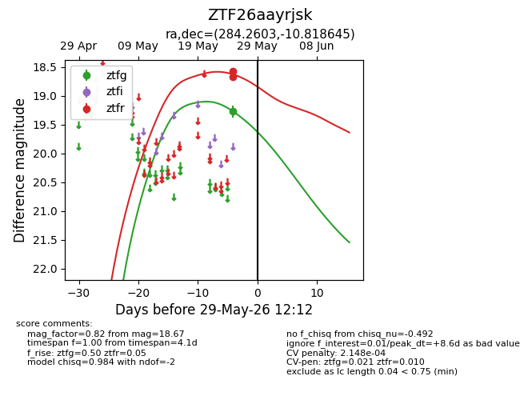
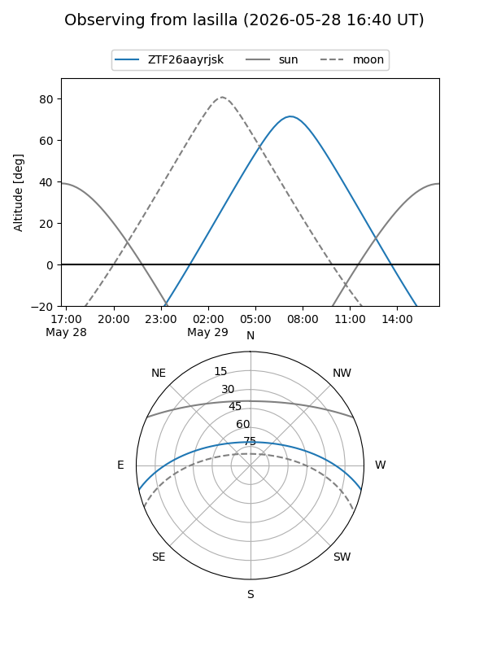
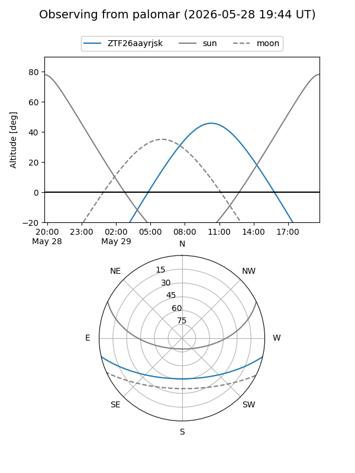
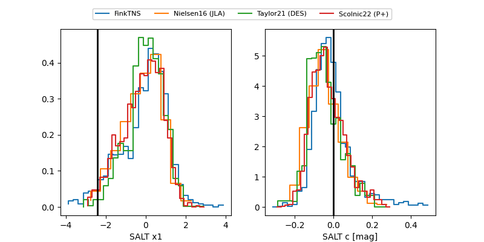

ZTF26aayrjsk
Target ZTF26aayrjsk at 2026-05-29 12:16
Aliases and brokers:
lsst-FINK: link
lsst-Lasair: link
lsst-ALeRCE: link
ztf-FINK: link
ztf-Lasair: link
ztf-ALeRCE: link
alt names
ZTF26aayrjsk (ztf,fink_ztf)
Coordinates:
equatorial (ra, dec) = 284.2603,-10.81865
equatorial (HMS+DMS) = 18:57:02.48,-10:49:07.12
galactic (l, b) = (23.8990,-6.14009)
Flags:
likely cv: !
Photometry:
last ztfg=19.27, ztfr=18.67
1 ztfg, 2 ztfr detections
Lightcurve

Visibility


Additional plots
